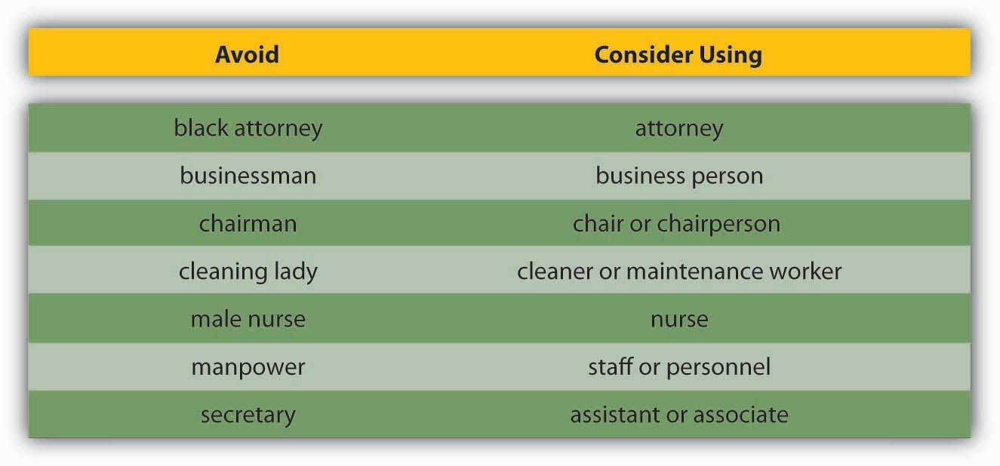

Communicating can be more of a challenge than you think, when you realize the many things that can stand in the way of effective communication. These include filtering, selective perception, information overload, emotional disconnects, lack of source familiarity or credibility, workplace gossip, semantics, gender differences, differences in meaning between Sender and Receiver, and biased language. Let’s examine each of these barriers.
FilteringThe distortion or withholding of information to manage a person’s reactions. is the distortion or withholding of information to manage a person’s reactions. Some examples of filtering include a manager who keeps her division’s poor sales figures from her boss, the vice president, fearing that the bad news will make him angry. The old saying, “Don’t shoot the messenger!” illustrates the tendency of Receivers (in this case, the vice president) to vent their negative response to unwanted Messages on the Sender. A gatekeeper (the vice president’s assistant, perhaps) who doesn’t pass along a complete Message is also filtering. The vice president may delete the e-mail announcing the quarter’s sales figures before reading it, blocking the Message before it arrives.
As you can see, filtering prevents members of an organization from getting a complete picture of the way things are. To maximize your chances of sending and receiving effective communications, it’s helpful to deliver a Message in multiple ways and to seek information from multiple sources. In this way, the effect of any one person’s filtering the Message will be diminished.
Since people tend to filter bad news more during upward communication, it is also helpful to remember that those below you in an organization may be wary of sharing bad news. One way to defuse the tendency to filter is to reward employees who clearly convey information upward, regardless of whether the news is good and bad.
Here are some of the criteria that individuals may use when deciding whether to filter a Message or pass it on:
Once again, filtering can lead to miscommunications in business. Each listener translates the Message into his or her own words, creating his or her own version of what was said.Alessandra, T. (1993). Communicating at work. New York: Fireside.
Selective perceptionThe personal filtering of what we see and hear to suit our own needs. refers to filtering what we see and hear to suit our own needs. This process is often unconscious. Small things can command our attention when we’re visiting a new place—a new city or a new company. Over time, however, we begin to make assumptions about the way things are on the basis of our past experience. Often, much of this process is unconscious. “We simply are bombarded with too much stimuli every day to pay equal attention to everything so we pick and choose according to our own needs.”Pope, R. R. Selective perception. Illinois State University. Retrieved December 1, 2008, from http://lilt.ilstu.edu/rrpope/rrpopepwd/articles/perception3.html. Selective perception is a time-saver, a necessary tool in a complex culture. But it can also lead to mistakes.
Think back to the earlier example conversation between Bill, who was asked to order more toner cartridges, and his boss. Since Bill found his boss’s to-do list to be unreasonably demanding, he assumed the request could wait. (How else could he do everything else on the list?) The boss, assuming that Bill had heard the urgency in her request, assumed that Bill would place the order before returning to the other tasks on her list.
Both members of this organization were using selective perception to evaluate the communication. Bill’s perception was that the task of ordering could wait. The boss’s perception was that her time frame was clear, though unstated. When two selective perceptions collide, a misunderstanding occurs.
Information overloadThis occurs when the information processing demands on an individual’s time to perform interactions and internal calculations exceed the supply or capacity of time available for such processing. can be defined as “occurring when the information processing demands on an individual’s time to perform interactions and internal calculations exceed the supply or capacity of time available for such processing.”Schick, A. G., Gordon, L. A., & Haka, S. (1990). Information overload: A temporal approach. Accounting, Organizations, and Society, 15, 199–220. Messages reach us in countless ways every day. Some are societal—advertisements that we may hear or see in the course of our day. Others are professional—e-mails, and memos, voice mails, and conversations from our colleagues. Others are personal—messages and conversations from our loved ones and friends.
Add these together and it’s easy to see how we may be receiving more information than we can take in. This state of imbalance is known as information overload. Experts note that information overload is “A symptom of the high-tech age, which is too much information for one human being to absorb in an expanding world of people and technology. It comes from all sources including TV, newspapers, and magazines as well as wanted and unwanted regular mail, e-mail and faxes. It has been exacerbated enormously because of the formidable number of results obtained from Web search engines.”Retrieved July 1, 2008, from PC Magazine encyclopedia Web site, http://www.pcmag.com/encyclopedia_term/0,2542,t=information+overload&i=44950,00.asp, and reinforced by information in Dawley, D. D., & Anthony, W. P. (2003). User perceptions of e-mail at work. Journal of Business and Technical Communication, 17, 170–200. Other research shows that working in such fragmented fashion has a significant negative effect on efficiency, creativity, and mental acuity.Based on Overholt, A. (2001, February). Intel’s got (too much) mail. Fast Company. Retrieved July 2, 2008, from http://www.fastcompany.com/online/44/intel.html and http://blogs.intel.com/it/2006/10/information_overload.php.
Going back to our example of Bill. Let’s say he’s in his cubicle on the phone with a supplier. While he’s talking, he hears the chime of e-mail alerting him to an important message from his boss. He’s scanning through it quickly, while still on the phone, when a coworker pokes his head around the cubicle corner to remind Bill that he’s late for a staff meeting. The supplier on the other end of the phone line has just given Bill a choice among the products and delivery dates he requested. Bill realizes he missed hearing the first two options, but he doesn’t have time to ask the supplier to repeat them all or to try reconnecting to place the order at a later time. He chooses the third option—at least he heard that one, he reasons, and it seemed fair. How good was Bill’s decision amid all the information he was processing at the same time?
Emotional disconnects happen when the Sender or the Receiver is upset, whether about the subject at hand or about some unrelated incident that may have happened earlier. An effective communication requires a Sender and a Receiver who are open to speaking and listening to one another, despite possible differences in opinion or personality. One or both parties may have to put their emotions aside to achieve the goal of communicating clearly. A Receiver who is emotionally upset tends to ignore or distort what the Sender is saying. A Sender who is emotionally upset may be unable to present ideas or feelings effectively.
Lack of source familiarity or credibility can derail communications, especially when humor is involved. Have you ever told a joke that fell flat? You and the Receiver lacked the common context that could have made it funny. (Or yes, it could have just been a lousy joke.) Sarcasm and irony are subtle, and potentially hurtful, commodities in business. It’s best to keep these types of communications out of the workplace as their benefits are limited, and their potential dangers are great. Lack of familiarity with the Sender can lead to misinterpreting humor, especially in less-rich information channels like e-mail. For example, an e-mail from Jill that ends with, “Men, like hens, should boil in vats of oil,” could be interpreted as antimale if the Receiver didn’t know that Jill has a penchant for rhyme and likes to entertain coworkers by making up amusing sayings.
Similarly, if the Sender lacks credibility or is untrustworthy, the Message will not get through. Receivers may be suspicious of the Sender’s motivations (“Why am I being told this?”). Likewise, if the Sender has communicated erroneous information in the past, or has created false emergencies, his current Message may be filtered.
Workplace gossip, also known as the grapevineThe informal gossip network within a given organization., is a lifeline for many employees seeking information about their company.Kurland, N. B., & Pelled, L. H. (2000). Passing the word: Toward a model of gossip and power in the workplace. Academy of Management Review, 25, 428–438. Researchers agree that the grapevine is an inevitable part of organizational life. Research finds that 70% of all organizational communication occurs at the grapevine level.Crampton, S. M. (1998). The informal communication network: factors influencing grapevine activity. Public Personnel Management. Retrieved July 2, 2008, from http://www.allbusiness.com/management/735210-1.html.
Employees trust their peers as a source of Messages, but the grapevine’s informal structure can be a barrier to effective communication from the managerial point of view. Its grassroots structure gives it greater credibility in the minds of employees than information delivered through official channels, even when that information is false.
Some downsides of the office grapevine are that gossip offers politically minded insiders a powerful tool for disseminating communication (and self-promoting miscommunications) within an organization. In addition, the grapevine lacks a specific Sender, which can create a sense of distrust among employees—who is at the root of the gossip network? When the news is volatile, suspicions may arise as to the person or persons behind the Message. Managers who understand the grapevine’s power can use it to send and receive Messages of their own. They also decrease the grapevine’s power by sending official Messages quickly and accurately, should big news arise.
SemanticsThe meanings of words and the study of meaning in communication. is the study of meaning in communication. Words can mean different things to different people, or they might not mean anything to another person. For example, companies often have their own acronyms and buzzwords (called business jargon) that are clear to them but impenetrable to outsiders. For example, at IBM, GBS is focusing on BPTS, using expertise acquired from the PwC purchase (which had to be sold to avoid conflicts of interest in light of SOX) to fend other BPO providers and inroads by the Bangalore tiger. Does this make sense to you? If not, here’s the translation: IBM’s Global Business Services (GBS) division is focusing on offering companies Business Process Transformation Services (BPTS), using the expertise it acquired from purchasing the management consulting and technology services arm of PricewaterhouseCoopers (PwC), which had to sell the division because of the Sarbanes-Oxley Act (SOX, enacted in response to the major accounting scandals like the Enron). The added management expertise puts it above business process outsourcing (BPO) vendors who focus more on automating processes rather than transforming and improving them. Chief among these BPO competitors is Wipro, often called the “Bangalore tiger” because of its geographic origin and aggressive growth.
Given the amount of Messages we send and receive every day, it makes sense that humans try to find shortcuts—a way to communicate things in code. In business, this code is known as jargonA specific set of acronyms or words unique to a specific group or profession.. Jargon is the language of specialized terms used by a group or profession. It is common shorthand among experts and if used sensibly can be a quick and efficient way of communicating. Most jargon consists of unfamiliar terms, abstract words, nonexistent words, acronyms, and abbreviations, with an occasional euphemism thrown in for good measure. Every profession, trade, and organization has its own specialized terms.Wright, N. Keep it jargon-free. Retrieved July 2, 2008, from http://www.plainlanguage.gov/howto/wordsuggestions/jargonfree.cfm. At first glance, jargon seems like a good thing—a quicker way to send an effective communication, the way text message abbreviations can send common messages in a shorter, yet understandable way. But that’s not always how things happen. Jargon can be an obstacle to effective communication, causing listeners to tune out or fostering ill-feeling between partners in a conversation. When jargon rules the day, the Message can get obscured.
A key question to ask before using jargon is, “Who is the Receiver of my Message?” If you are a specialist speaking to another specialist in your area, jargon may be the best way to send a message while forging a professional bond—similar to the way best friends can communicate in code. For example, an information technology (IT) systems analyst communicating with another IT employee may use jargon as a way of sharing information in a way that reinforces the pair’s shared knowledge. But that same conversation should be held in standard English, free of jargon, when communicating with staff members outside the IT group.
Here is a Web site of 80 buzz words in business:
http://www.amanet.org/movingahead/editorial2002_2003/nov03_80buzzwords.htm
and a discussion of why slang is a problem:
http://sbinfocanada.about.com/od/speakforsuccesscourse/a/speechlesson5.htm.
Gender differences in communication have been documented by a number of experts, including linguistics professor Deborah Tannen in her best-selling book You Just Don’t Understand: Women and Men in Conversation.Tannen, D. (1991). You just don’t understand: Women and men in conversation. New York: Ballantine. Men and women work together every day. But their different styles of communication can sometimes work against them. Generally speaking, women like to ask questions before starting a project, while men tend to “jump right in.” A male manager who’s unaware of how many women communicate their readiness to work may misperceive a ready employee as not ready.
Another difference that has been noticed is that men often speak in sports metaphors, while many women use their home as a starting place for analogies. Women who believe men are “only talking about the game” may be missing out on a chance to participate in a division’s strategy and opportunities for teamwork and “rallying the troops” for success.Krotz, J. L. (n.d.). 6 tips for bridging the communication gap. Retrieved July 2, 2008, from Microsoft Small Business Center Web site, http://www.microsoft.com/smallbusiness/resources/management/leadership-training/women-vs-men-6-tips-for-bridging-the-communication-gap.aspx.
“It is important to promote the best possible communication between men and women in the workplace,” notes gender policy adviser Dee Norton, who provided the above example. “As we move between the male and female cultures, we sometimes have to change how we behave (speak the language of the other gender) to gain the best results from the situation. Clearly, successful organizations of the future are going to have leaders and team members who understand, respect and apply the rules of gender culture appropriately.”Norton, D. Gender and communication—finding common ground. Retrieved July 2, 2008, from http://www.uscg.mil/leadership/gender.htm.
Being aware of these gender differences can be the first step in learning to work with them, as opposed to around them. For example, keep in mind that men tend to focus more on competition, data, and orders in their communications, while women tend to focus more on cooperation, intuition, and requests. Both styles can be effective in the right situations, but understanding the differences is a first step in avoiding misunderstandings based on them.
Differences in meaning often exist between the Sender and Receiver. “Mean what you say, and say what you mean.” It’s an easy thing to say. But in business, what do those words mean? Different words mean different things to different people. Age, education, and cultural background are all factors that influence how a person interprets words. The less we consider our audience, the greater our chances of miscommunication will be. When communication occurs in the cross-cultural context, extra caution is needed given that different words will be interpreted differently across cultures and different cultures have different norms regarding nonverbal communication. Eliminating jargon is one way of ensuring that our words will convey real-world concepts to others. Speaking to our audience, as opposed to about ourselves, is another. Nonverbal Messages can also have different meanings.
Table 12.1 Gestures Around the Globe
|
Figure 12.8 
|
1. “V” for victory. Use this gesture with caution! While in North America it signs victory or peace, in England and Australia it means something closer to “take this!” |
|
Figure 12.9 |
2. The “OK” gesture. While in North America it means things are going well, in France it means a person is thought to be worthless, in Japan it refers to money, and in Brazil, Russia, and Germany it means something really not appropriate for the workplace. |
|
Figure 12.10 
|
3. The “thumbs up” means one in Germany, five in Japan, but a good job in North America. This can lead to confusion. |
|
Figure 12.11 
|
4. “Hook ‘em horns.” This University of Texas rallying call looks like the horns of a bull. However, in Italy it means you are being tricked, while in Brazil and Venezuela it means you are warding off evil. |
|
Figure 12.12 |
5. Waving your hand. In much of Europe waving your hand indicates a disagreement. However, in North America it is routinely used as a way to signal greetings or to get someone’s attention. |
Adapted from information in Axtell, R. E. (1998). Gestures: The do’s and taboos of body language around the world. New York: John Wiley.
Managers who speak about “long-term goals and profits” to a staff that has received scant raises may find their core Message (“You’re doing a great job—and that benefits the folks in charge!”) has infuriated the group they hoped to inspire. Instead, managers who recognize the “contributions” of their staff and confirm that this work is contributing to company goals in ways “that will benefit the source of our success—our employees as well as executives,” will find their core Message (“You’re doing a great job—we really value your work”) is received as opposed to being misinterpreted.
Biased language can offend or stereotype others on the basis of their personal or group affiliation. The figure below provides a list of words that have the potential to be offensive in the left-hand column. The right-hand column provides more neutral words that you can use instead.Adapted from information in Ashcraft, K., & Mumby, D. K. (2003). Reworking gender. Thousand Oaks, CA, Sage; Miller, C., & Swift, K. (1980). The handbook of nonsexist writing. New York: Lippincott & Crowell; Procter, M. (2007, September 11). Unbiased language. Retrieved July 2, 2008, from http://www.utoronto.ca/writing/unbias.html.
Figure 12.13 Avoiding Biased Language
Effective communication is clear, factual, and goal-oriented. It is also respectful. Referring to a person by one adjective (a brain, a diabetic, an invalid) reduces that person to that one characteristic. Language that belittles or stereotypes a person poisons the communication process. Language that insults an individual or group based on age, ethnicity, sexual preference, or political beliefs violates public and private standards of decency, ranging from civil rights to corporate regulations.
The effort to create a neutral set of terms to refer to heritage and preferences has resulted in a debate over the nature of “political correctness.” Proponents of political correctness see it as a way to defuse the volatile nature of words that stereotyped groups and individuals in the past. Critics of political correctness see its vocabulary as stilted and needlessly cautious.
Many companies offer new employees written guides on standards of speech and conduct. These guides, augmented by common sense and courtesy, are solid starting points for effective, respectful workplace communication. Tips for appropriate workplace speech include but are not limited to
Former Chrysler CEO Lee Iacocca lamented, “I only wish I could find an institute that teaches people how to listen. After all, a good manager needs to listen at least as much as he needs to talk.”Iacocca, L., & Novak, W. (1984). Iacocca: An autobiography. New York: Bantam Press. Research shows that listening skills are related to promotions.Sypher, B. D., Bostrom, R. N., & Seibert, J. H. (1989). Listening, communication abilities, and success at work. Journal of Business Communication, 26, 293–303. A Sender may strive to deliver a Message clearly. But the Receiver’s ability to listen effectively is equally vital to effective communication. The average worker spends 55% of her workdays listening. Managers listen up to 70% each day. But listening doesn’t lead to understanding in every case. Listening takes practice, skill, and concentration.
According to University of San Diego professor Phillip Hunsaker, “The consequences of poor listening are lower employee productivity, missed sales, unhappy customers, and billions of dollars of increased cost and lost profits. Poor listening is a factor in low employee morale and increased turnover because employees do not feel their managers listen to their needs, suggestions, or complaints.”Alessandra, T., Garner, H., & Hunsaker, P. L. (1993). Communicating at work. New York: Simon & Schuster. Clearly, if you hope to have a successful career in management, it behooves you to learn to be a good listener.
Alan Gulick, a Starbucks spokesperson, puts better listening to work in pursuit of better profits. If every Starbucks employee misheard one $10 order each day, he calculates, their errors would cost the company a billion dollars annually. To teach its employees to listen, Starbucks created a code that helps employees taking orders hear the size, flavor, and use of milk or decaf coffee. The person making the drink echoes the order aloud.
How can you improve your listening skills? The Roman philosopher Cicero said, “Silence is one of the great arts of conversation.” How often have we been in conversation with someone else where we are not really listening but itching to convey our portion? This behavior is known as “rehearsing.” It suggests the Receiver has no intention of considering the Sender’s Message and intends to respond to an earlier point instead. Clearly, rehearsing is an impediment to the communication process. Effective communication relies on another kind of listening: active listening.
Active listeningGiving full attention to what other people are saying. can be defined as giving full attention to what other people are saying, taking time to understand the points being made, asking questions as appropriate, and not interrupting at inappropriate times.O*NET Resource Center, the nation’s primary source of occupational information. Retrieved July 2, 2008, from http://online.onetcenter.org/skills.Active listening creates a real-time relationship between the Sender and the Receiver by acknowledging the content and receipt of a Message. As we’ve seen in the Starbucks example, repeating and confirming a Message’s content offers a way to confirm that the correct content is flowing between colleagues. The process creates a bond between coworkers while increasing the flow and accuracy of messaging.
Carl Rogers, founder of the “person-centered” approach to psychology, formulated five rules for active listening:
The good news is that listening is a skill that can be learned.Brownell, J. (1990). Perceptions of effective listeners: A management study. Journal of Business Communications, 27, 401–415. The first step is to decide that we want to listen. Casting aside distractions, such as by reducing background or internal noise, is critical. The Receiver takes in the Sender’s Message silently, without speaking. Second, throughout the conversation, show the speaker that you’re listening. You can do this nonverbally by nodding your head and keeping your attention focused on the speaker. You can also do it verbally, by saying things like, “Yes,” “That’s interesting,” or other such verbal cues. As you’re listening, pay attention to the Sender’s body language for additional cues about how they’re feeling. Interestingly, silence plays a major role in active listening. During active listening, we are trying to understand what has been said, and in silence, we can consider the implications. We can’t consider information and reply to it at the same time. That’s where the power of silence comes into play. Finally, if anything is not clear to you, ask questions. Confirm that you’ve heard the message accurately, by repeating back a crucial piece like, “Great, I’ll see you at 2 p.m. in my office.” At the end of the conversation, a “thank you” from both parties is an optional but highly effective way of acknowledging each other’s teamwork.
In summary, active listening creates a more dynamic relationship between a Receiver and a Sender. It strengthens personal investment in the information being shared. It also forges healthy working relationships among colleagues by making Speakers and Listeners equally valued members of the communication process.
Many barriers to effective communication exist. Examples include filtering, selective perception, information overload, emotional disconnects, lack of source familiarity or credibility, workplace gossip, semantics, gender differences, differences in meaning between Sender and Receiver, and biased language. The Receiver can enhance the probability of effective communication by engaging in active listening, which involves (1) giving one’s full attention to the Sender and (2) checking for understanding by repeating the essence of the Message back to the Sender.